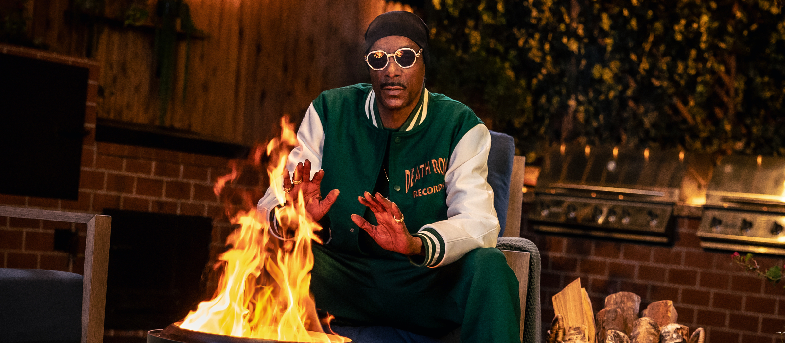
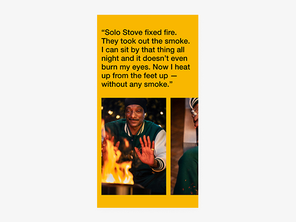
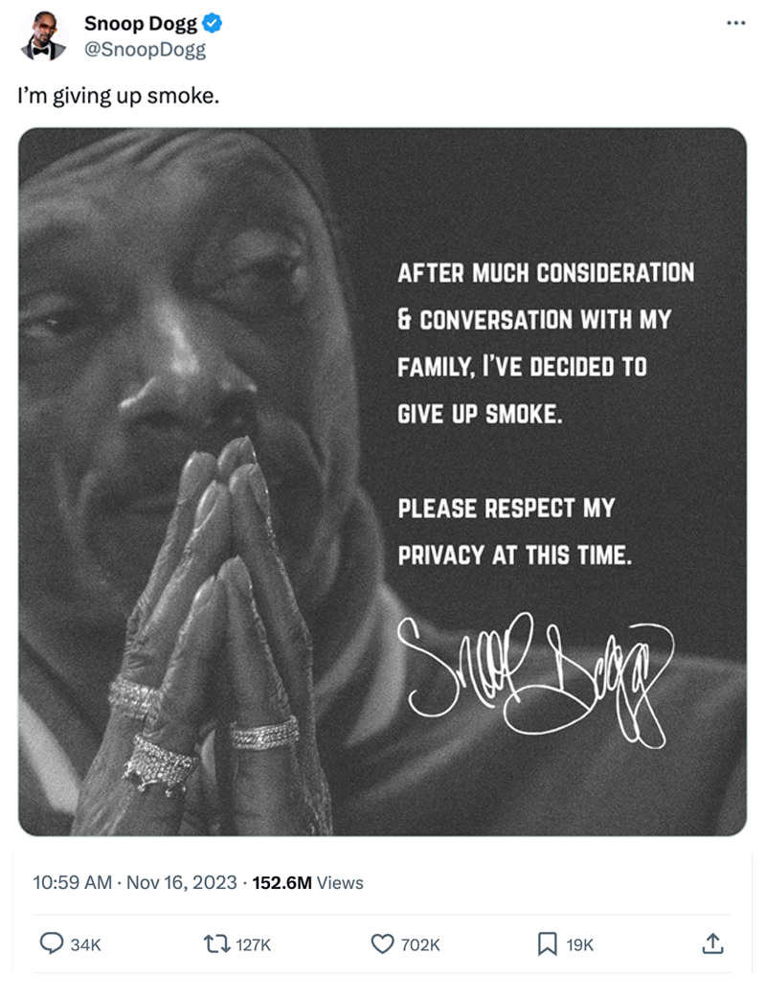

Snoop Goes Smokeless
The landing page behind Solo Stove's viral campaign, showcasing the smokeless fire pit line and a limited edition Snoop Dogg collab for millions of first-time visitors.

When Snoop Dogg announced he was giving up smoke, the internet showed up in the millions. The landing page had one job. Be ready when they arrived.
Snoop Dogg posted that he was "giving up smoke," then revealed days later that he meant Solo Stove's smokeless fire pits, kicking off the brand's first large-scale national campaign across broadcast, social, podcast, out-of-home, and digital. Every channel pointed to one destination on the site.
Viral traffic is unforgiving. The audience arriving wasn't the usual outdoor shopper. It was millions of curious visitors who knew Snoop, not Solo Stove, landing with seconds of attention and no context. A standard product page couldn't carry the joke, introduce the brand, and sell a fire pit at the same time.
The landing page had to do all three. It carried the campaign's voice, introduced the smokeless fire pit line to an audience meeting the brand for the first time, and featured the limited edition Snoop Stove collab as the campaign's shoppable centerpiece.
Approach
Millions showed up for the joke. The page had to be ready to sell the product.
The work

Reflection
"Heat Up From the Feet Up" only lands if the page is in on the joke.
Snoop lit the match. The page had to catch the spark without letting the bit swallow the sale. Playing the campaign straight enough that millions of first-time visitors got the punchline and a reason to buy in the same scroll. That was the fun of it, and the lesson I kept: when the whole internet shows up for a moment, the landing page has to be both the setup and the payoff — on brand, on time, and ready to convert the second attention peaks.

Impact
Campaign results, as reported by Solo Stove and The Martin Agency.